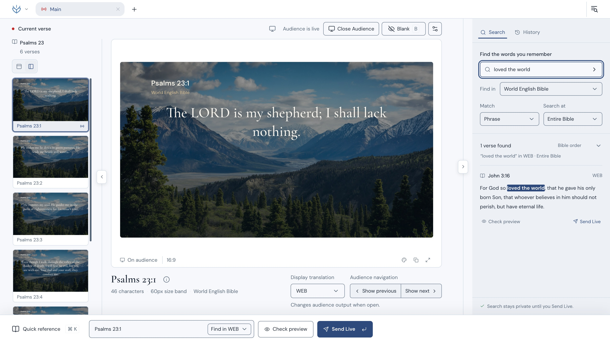
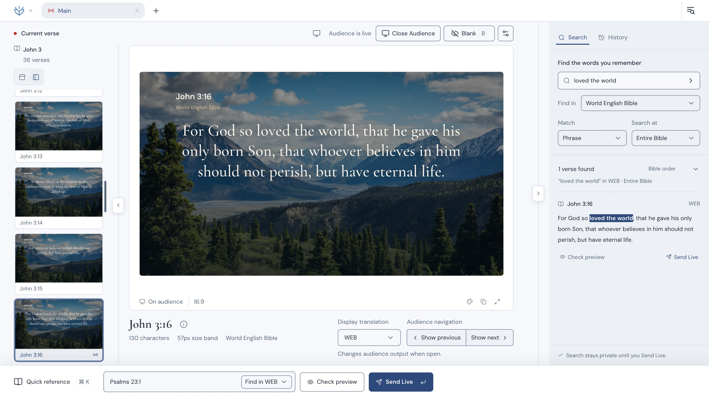
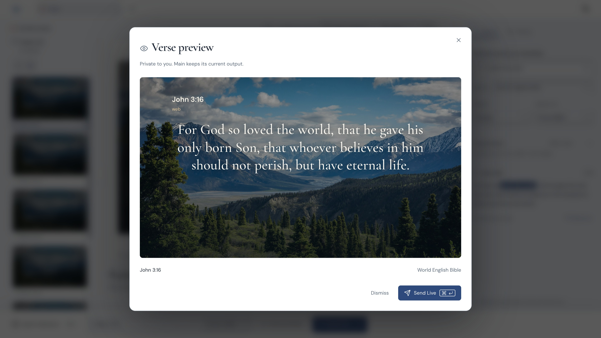

Find your passage.
Type a reference or search the words you remember. The bundled World English Bible works offline.
Find a passage, preview it privately, and present it on a separate audience display. Free desktop software for your next gathering.
Free to use. Offline Bible included.
macOS · Windows · Linux

Your screen. Your controls.The room. Just the passage.
Search the words you know or go straight to a reference.
Check the next passage privately while the audience keeps its view.
Use separate workspaces for separate selections and audience windows.
Your next passage.
Without losing the moment.
A little preparation on your screen.
A clear view on theirs.
Three steps. One operator. A separate view for the room.

Type a reference or search the words you remember. The bundled World English Bible works offline.

Read the verse preview before you send it. The audience’s current view stays in place.
Open the audience window on your display, send the passage, and keep the controls with you.
This beta has limited platform testing. Your reports help us understand how it works on more setups.
Report a problemThe initial beta has no Apple notarization or Windows publisher signing. Only continue if you trust the download.
On macOS, dismiss the warning, then check System Settings → Privacy & Security → Open Anyway. On Windows, inspect SmartScreen’s details; some systems offer More info → Run anyway. Organization policies may prevent these options.
An exception lets the app run; it does not establish software safety. Full installation instructions
Yes. The bundled World English Bible, local workspaces, search, and audience projection work offline. Downloading the app and checking for updates require internet.
Lumina checks quietly when online. A dot on the Lumina menu means an update is available. Open the menu, choose Update available, and review it. You choose when to install and restart.
Installation can close audience windows. Updates are intended to retain your workspaces and library. Beta users will receive the eventual stable release.
Yes. Personal, organizational, and commercial use is free. You may share original, unmodified installers with their notices. Lumina’s source is private; distributing modified or rebranded app builds requires permission.
Your settings and presentation content are ordinary app use. Third-party components retain their own rights. Read the application terms
The initial package is an x64 AppImage. Make it executable, then open it. Runtime and FUSE requirements vary by distribution; Linux runtime support remains experimental. Keep the file somewhere writable if you plan to use the updater.
Your Bible library, workspaces, and settings are stored on your computer. Online update checks contact GitHub. Bug reports are optional and public, so remove private content before attaching screenshots or logs.
Free for your church, your team, and your own gatherings.
Try the beta with your setup.